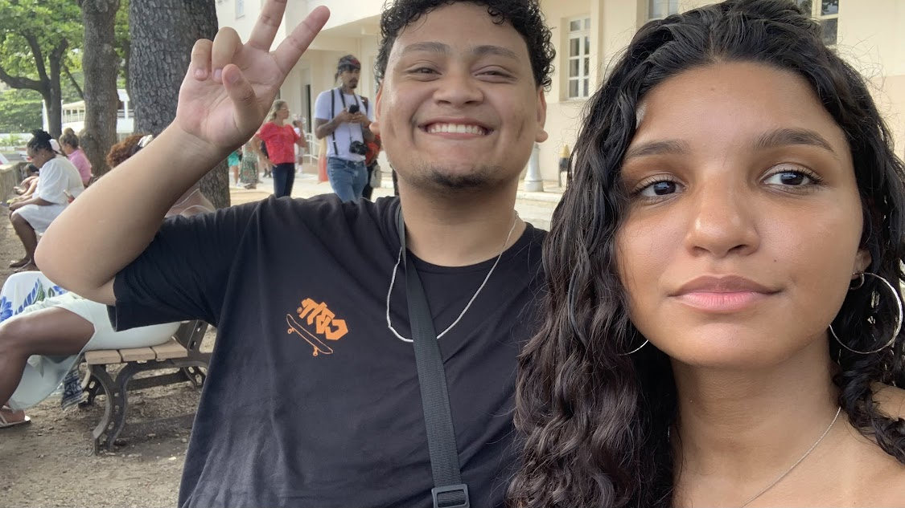
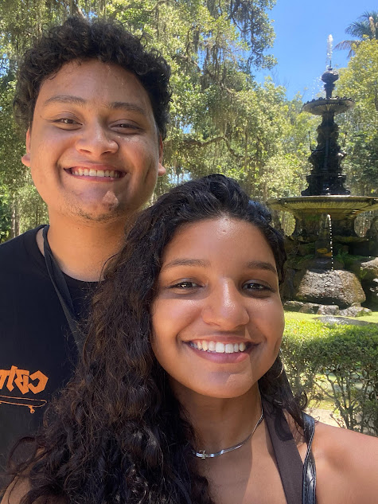
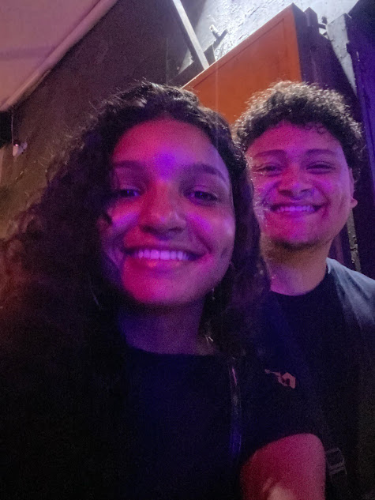
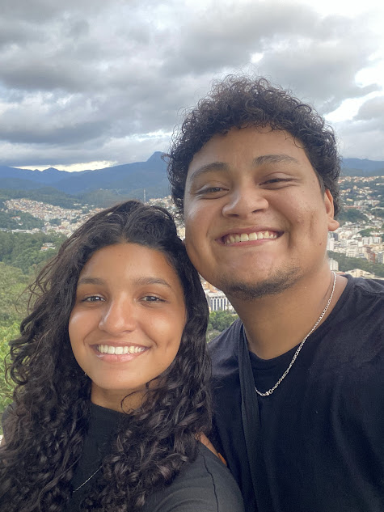
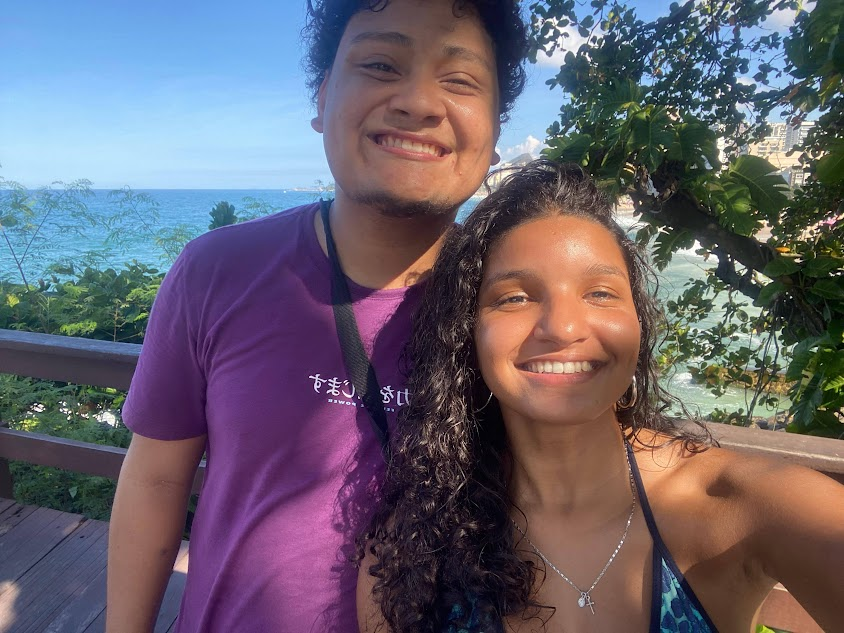
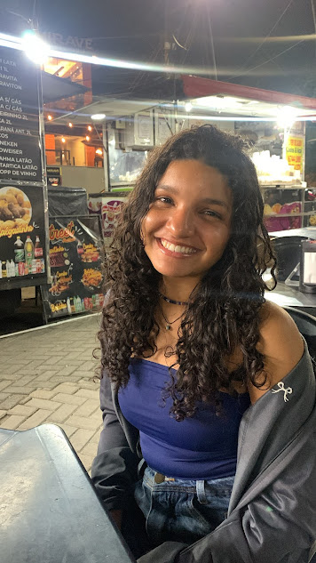

Oi amor, esse será um novo site para registrar nossos bons momentos, eu te amo <3.
1 - Nossa primeira foto oficial, pode não ser das melhores fotos, mas eu guardo essa foto com o maior carinho possível, foi o dia que eu tive certeza que eu amava aquela garota dos cabelos vermelhos, e isso não mudou até hoje, meu sentimento por você aumenta a cada dia que passa.
2 - Nosso primeiro encontro no forte de Copacabana, jesus amado, que dia incrível, nesse dia eu olhei para mim mesmo e pensei: Eu vou namorar essa garota, olha como ela é perfeita!
3 - Nosso encontro no Jardim Botânico, nesse dia eu estava exausto, tirei forças não sei da onde pra conseguir te ver, mas assim que chegamos, você automaticamente me deu energia. Sempre que estou com você, nada mais importa, além do quanto quero ficar com você.
4 - Quando fomos ao karaokê, virou nosso rolê de conforto, amo ir lá e tomar um frozen com você, todos os sábados à noite com você são mágicos amor, eu te amo!
5 - Nossa primeira viagem juntos, mds, foi tão incrível, amo dormir com você, amo passar um fim de semana inteiro com você, eu sinto falta dessa viagem, pois a gente ficou tão agarrado, que me deixou mal e com saudades depois da viagem.
6 - Esse dia apesar de legal, foi bem cansativo, andamos uns 4 km, nunca mais kkkkkkk, mas a vista foi linda.
7 - Só coloquei essa foto porque gosto de te admirar.